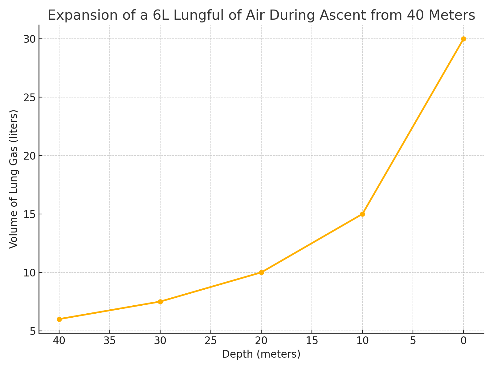

Recreational dive training has long emphasized a fundamental safety promise: that the diver can always safely ascend directly to the surface in case of emergency. This concept underpins the structure of dive tables, no-decompression limits (NDLs), and even most entry-level and continuing education courses. But somewhere between 30 meters and the agency-sanctioned limit of 40 meters, that safety promise quietly evaporates. And yet, most recreational divers are unaware—or worse, misled into believing—that a dive to 130 feet is simply a deeper flavor of the same safe activity.
The problem lies in the way the Deep Diver specialty certification is marketed, structured, and executed. Agency deep diver specialties (PADI, NAUI, SSI) often have low entry barriers—and sometimes even lower exit thresholds. In many cases, a few supervised dives, some light theory, and a puzzle exercise at 100 feet are all that stand between a diver and a card that certifies them to dive to the recreational maximum depth of 130 feet.
The result is a dangerous illusion: that the diver is equipped to manage the real risks of a 40-meter profile. In truth, this is often not the case. These dives, when performed with a single tank and without redundant gas or staged decompression capability, are not recreational in practice—they are technical dives disguised in recreational clothing.
A Thin NDL Margin
At 40 meters, NDLs shrink dramatically. Most dive computers and tables give you 7 to 10 minutes of bottom time on air before a decompression stop becomes mandatory. That number is based on idealized conditions: resting exertion levels, normal breathing, no stress, and perfect ascent control. In the real world, a slightly late descent, a pause for a photo, or a buddy issue can push you into deco territory without warning.
This is compounded by the fact that recreational divers are not trained to handle decompression obligations. They may not recognize the signs of creeping obligation, may not have gas planned to accommodate it, and often lack the discipline or experience to hold stops in current, cold, or silted-out conditions.
Even those who bring a deco gas bottle (e.g., EAN50) often do so without proper technical training. In dark lakes or caves, or even low-vis ocean dives, a stage bottle clipped to a D-ring is of little use if the diver is disoriented or can’t locate it during ascent. Without practiced gas switch protocols and backup contingencies, it’s a false sense of security—a prop rather than a safety system.
Controlled Emergency Swimming Ascent (CESA) from 40 Meters: Why It Fails
Another recreational pillar is the CESA—the Controlled Emergency Swimming Ascent. It’s taught as a last-ditch survival maneuver: blow bubbles, ascend slowly, and make it to the surface. But from 40 meters, this technique is not just risky—it’s physiologically implausible.
Why? Boyle’s Law and Lung Volume.
- At 40 meters (5 ATA), a full 6-liter lungful of air expands as the diver ascends.
- By 20 meters (3 ATA), much of the usable exhaled air is gone.
- By 10 meters (2 ATA), the lungs are empty, but the diver still has 10 meters (33 feet) to go.
CESA works for shallow dives (e.g., from 10–15 meters), but from 40 meters, a diver runs out of exhalable gas halfway up. The lungs are empty, but the ascent isn’t over—leading to hypoxia, blackout, or panic. Holding your breath at that point is equally dangerous due to overexpansion risk.
If your dive plan relies on CESA from 130 feet, you don’t have a recreational profile—you have a technical risk profile with no redundancy.

Narcosis, Gas Density, and Panic
The risks of deep air dives go beyond simple NDL math. At 40 meters, narcosis becomes a real and variable threat. While some divers claim to feel unaffected, others experience reduced cognitive function, impaired decision-making, or even euphoria—right at the point in the dive when clear thinking is most essential.
Worse, gas density increases dramatically with depth. At 5 ATA, air is five times denser, meaning each breath requires significantly more effort. This can lead to CO2 retention, which in turn exacerbates narcosis and increases the likelihood of panic. Divers who have never felt truly narc’d or had to manage CO2 build-up under exertion may not realize how quickly things can spiral out of control.
Card Collecting and Bravado Diving
The psychology of the recreational diving world also plays a role. Many divers collect certification cards like trophies, sometimes with minimal understanding or practice. The Deep Diver card is often seen as a rite of passage—a badge that says “I’ve made it.”
This can quickly spiral into depth competitions: who stayed down longer, who went deeper, who saw the bottom timer tick to 130. These dives often become bottom-time contests with little margin for safety. Gas consumption increases rapidly at depth, and many single-tank divers hit their turn pressure or minimum ascent gas before they’ve done anything meaningful on the bottom.
This isn’t hypothetical. Numerous near-misses and accidents reported in diving forums and incident reports follow this pattern: diver gets deep card, pushes limit, hits deco, has no plan.
Nothing Magical at 130 Feet
Unless a specific wreck or geological feature lies at 40 meters, there is often little to justify the risk of going that deep. The colors are muted, narcosis creeps in, and your gas doesn’t last long. At 25–30 meters, most of what makes deep diving exciting can still be safely enjoyed—without courting the edge of decompression or cognitive impairment.
And when there is a wreck at depth? That adds even more variables: entanglement risk, overhead environment, navigation, and increased stress. Without redundancy and rehearsed protocols, it’s simply not a recreational dive.
The Deep Diver Course Should Change
Rather than enabling more risky dives, the Deep Diver specialty should focus on why not to dive to 40 meters. It should introduce basic decompression theory, gas planning strategies, narcosis management, and ascent discipline—not just how to solve a puzzle on the bottom. It should highlight that 40 meters is a technical threshold, not a recreational playground.
It should also emphasize that the deep card is not a license—it’s an invitation to reflect: Am I ready to dive at this depth? Do I have the tools, the team, and the training?
Conclusion: A Line Has Been Crossed
The core promise of recreational diving is freedom from complex risk—freedom to ascend, freedom from mandatory stops, and freedom to explore without specialized protocols. A dive to 40 meters breaks that promise. It brings in narcosis, limited gas margins, decompression ceilings, and high-stakes decision-making.
It’s time to stop pretending that a dive to 130 feet is just another recreational dive. It’s not. It’s a technical dive profile in disguise, and it should be treated with the planning, respect, and training that any such dive demands.
Update: Critical Feedback
Naturally, some of the contrent delivery providers (e.g., PADI divemasters and instructors) took great offense in my doomsday, overly conservative and misrepresenttion of how they deliver content and teach deep diver certification classes. Of course they would. No instructor would ever admit they certified a diver to do something unsafe. But, I was never critical of the instructor in this blog post. I was very critical of the Deep Diver course content, and more so of the deep diver. I have taken the PADI Deep Diver certification course, and I have dove with many that have.
I stand by my position: No one ever fails a Deep Diver certification course. And more so, not every diver that passes the Deep Diver certification course is qualified to be my deep dive buddy.
💡 For Example
- The PADI Deep Dive certification course states a dive computer is optional; either a dive computer or a timer! Talk about intentional task overloading - asking a recreational diver to update their dive profile in real time with depth and time, and compute nitrogen tissue loading. Nope - bad idea. Dive computers are mandatory for deep dives!
- The PADI Deep Dive certification course states in the section covering Deep Dive equipment that an alternate air source is recommended and should be easy to locate. OK - that's good advice. However, the section of equipment goes on to say an H-valve or Y-valve is an alternative, as is carrying a pony bottle. None of these are appropriate for the recreational diver, especially a pony bottle. See the side panel below regarding pony bottle, and why they are not a viable solution for out of air condition at 130 ft. The best option for out of air at 130 feet is to not be out of air. The second option is to have a competent buddy to share air with while both of you ascend.
-
Let's dive deepeer into the Pony Bottle issue.
Assuming a diver with a resting or average RMV of 22 L/min, ascending from 130 ft with:
- Ascent to 55 ft in 2.5 min
- Stop at 55 ft for 2 min
- Ascent to 15 ft in 2 min
- Safety stop at 15 ft for 4 min
- Final ascent in 0.5 min
Total gas required: ~558 liters at surface volume.
Pony Bottle Capacity Total Gas (L) Sufficient? AL19 2.5 L @ 207 bar ~518 L ⚠️ Just Under AL30 4.0 L @ 207 bar ~828 L ✅ AL40 5.7 L @ 207 bar ~1180 L ✅ Minimum Recommended Pony Bottle: AL30 (4.0L, 207 bar)
Caution: This analysis assumes a resting RMV of 22 L/min. In a real emergency, divers often breathe at 2× or more their normal rate due to stress or exertion. If your actual RMV surges to 44 L/min, the AL30 bottle may be depleted halfway through the ascent. For better safety margin, consider an AL40 or larger.
We compare oxygen exposure (PO2) during the first 2.5 minutes of ascent from 130 ft using various gas mixes:
Gas PO2 @ 130 ft Risk Level Deco Benefit Verdict Air (21%) 1.05 ATA ✅ Safe ❌ None ✅ Very Safe EAN28 1.40 ATA ✅ Safe 👍 Good ✅ Recommended EAN32 1.60 ATA ⚠️ At Limit 🔥 Excellent ✅ Acceptable for emergencies only EAN36 1.80 ATA 🚫 Exceeds Limit 🔥🔥 High 🚫 Not advised EAN40 2.00 ATA ❌ Seizure Risk 🔥🔥🔥 Very High ❌ Unsafe Recommendation: Use EAN28 for the best balance of oxygen-rich off-gassing and CNS safety. EAN32 may be acceptable for short, emergency-only use if ascent is immediate and calm. Avoid EAN36+ due to high PO2 risk at depth.
Note: Always confirm gas mix with an analyzer, calculate MODs, and pre-plan bailout use. Avoid high-PO2 mixes unless trained in oxygen exposure management and the risk profile warrants it.